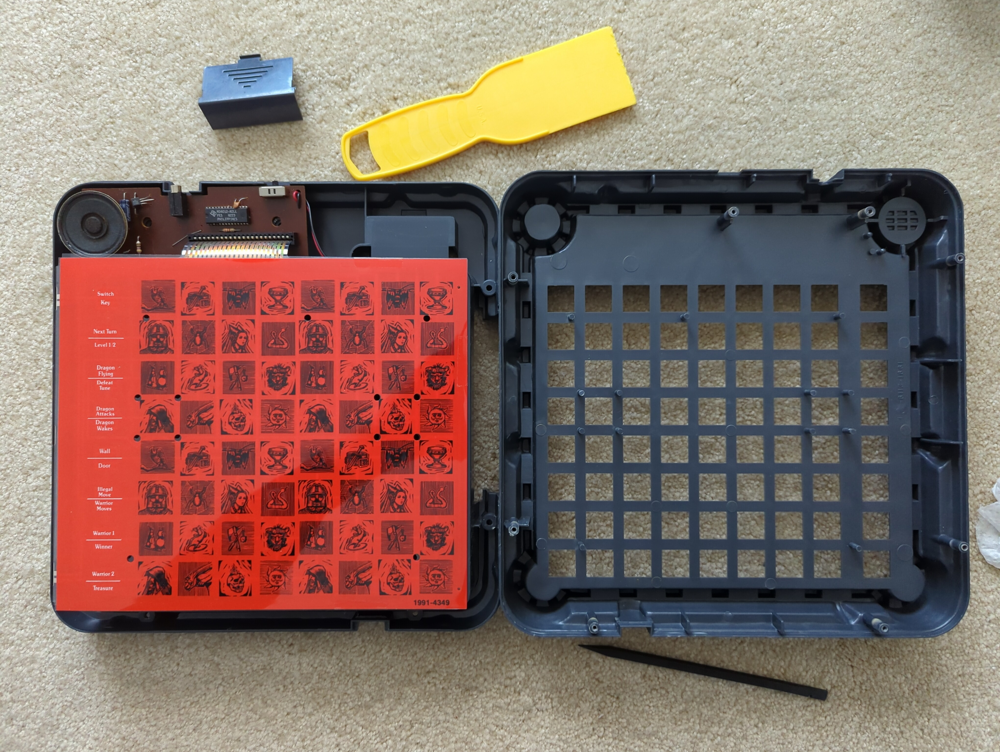
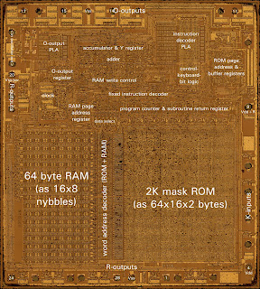
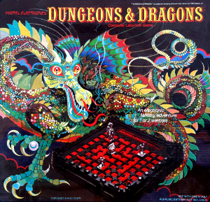

Mattel Dungeons & Dragons Computer Labyrinth Game
A hidden maze in a 4-bit chip, mapped one touch at a time

Overview
The Dungeons & Dragons Computer Labyrinth Game, released by Mattel in 1980, is an electronic board game that hides its entire world inside a four-bit microcontroller. The board is a plastic castle superstructure with a chessboard-sized 8x8 grid in the middle. The playing surface is touch-sensitive: under each square sits a membrane switch, and the game's pieces are diecast metal so that pressing a piece down onto a square reliably registers as input. Every game, the computer randomly generates an invisible labyrinth: about fifty walls, a secret treasure room, and a sleeping dragon, all held in the chip's memory with no display of any kind.
The interaction model is the point. Players move metal warrior miniatures up to eight squares per turn, pressing each piece into the grid. The machine answers only in sound: twelve distinct electronic tones distinguish a wall, a door, the dragon stirring, an attack, the treasure, and victory. Blunder into an invisible wall and the beep stops your movement for the turn; you mark the discovered wall with an orange plastic marker, building a map of the unseen maze as you go. The dragon wakes when a player comes within three squares of the treasure and then pursues by one square per turn, tracked only in memory and audible only through its attack tones. Hidden per-player strength factors, secret rooms, and the dragon's movement algorithm all live in the machine's state.
The electronics were documented in a 2023 teardown by Cameron Kaiser (Old VCR blog, covered by Hackaday). The PCB is small: a single 2N2222 transistor, a few passives, and one 28-pin Texas Instruments DIP marked M34012 — a customized TMS1100, itself a descendant of the TMS1000, the first commercial microcontroller. It is a PMOS part that runs directly off a 9-volt battery, with only four inputs and nineteen outputs; the designers used all four inputs and eighteen of the outputs just to scan the 64-square membrane keyboard. At roughly 475 kHz it does more than enough: it generates a maze, runs a dragon, and referees two players. The game survives in MAME's TMS1000-family handheld emulation and in an online playable emulation at dndlabyrinth.com.
Deep dive
Each time the game starts, the computer randomly places about fifty walls across the 64-square board along with a treasure room and a sleeping dragon. Nothing is visible: the player discovers walls only by moving a piece into them and hearing the machine's tone. The White Dwarf reviewer (August 1982) described 'your heroic warrior blundering into yet another invisible wall.' Players map the unseen geometry with the included orange wall markers, effectively becoming surveyors of the machine's memory.
The game has no display — no LEDs beyond what the electronics need, no screen. All state is conveyed through twelve audio cues: entering a clear square, hitting a wall, crossing a door, the dragon waking, the dragon flying toward a warrior, an attack, taking damage, finding the treasure, victory. Eight buttons on the side of the board let players hear what the tones mean, a workaround for what the manual could not describe. This is pure audio feedback for a spatial game — the user interface is literally a beeper.
The dragon's behavior is genuinely algorithmic, as documented in the game's rules: it starts asleep; it wakes when any player is three squares from the treasure; it then moves one square per turn toward a target — the player holding the treasure, or the closest player, or the treasure room if both players are hidden in their secret rooms — and it moves diagonally and over walls if necessary. Its position is unknown until it attacks, at which point you may place the dragon figurine on the board. Two players can also attack each other, with the computer assigning a variable strength factor to each warrior in memory.
Cameron Kaiser's 2023 teardown revealed a tiny PCB holding a single transistor, a few resistors and capacitors, and one 28-pin Texas Instruments M34012 chip — a customized TMS1100, a four-bit PMOS microcontroller from the TMS1000 family. With four inputs and nineteen outputs, reading a 64-key membrane matrix was difficult; the designers used every input and all but one output. The part runs straight off a 9-volt battery at roughly 475 kHz. Mattel needed a cheap, customizable part to mass-produce, and TI's design allowed a customer to supply a ROM and two PLAs and get back a chip by the million — the same deal that produced Speak & Spell's TMS5100 a year earlier.
The game was reviewed in White Dwarf #32 (August 1982) with a score of 4 and was named to the Games 100 lists of 1981 and 1982. The White Dwarf reviewer found it good for under-12s ('simplicity itself to learn') but mocked the price and the 'cheap looking plastic castle.' The follow-up, Mattel's Dungeons & Dragons Computer Fantasy Game (1981), was the last of the line. Modern preservation is strong for an electronic toy: the game runs under MAME's TMS1000-family handheld driver, an online emulation at dndlabyrinth.com keeps the maze-generating firmware playable, and collector teardowns document the hardware.
Team & pioneers
- Mattel Electronics. Publisher and designer of the game, part of Mattel's early-1980s electronic games line alongside Intellivision and Auto Race.
- Texas Instruments. Supplier of the M34012, a customized TMS1100 four-bit PMOS microcontroller used for maze generation, dragon AI, and membrane keyboard scanning.
- Cameron Kaiser. Retrocomputing writer and preservationist; documented the hardware in a complete 2023 teardown on the Old VCR blog, covered by Hackaday.
Media


Sources
- Wikipedia — Dungeons & Dragons Computer Labyrinth Game
- Hackaday — 'Dungeons And Dragons Board Game From The 1980s Holds A TMS1100' (Feb 2023)
- Old VCR blog — Cameron Kaiser full teardown (Jan 2023, CC BY-NC-ND)
- BoardGameGeek — Dungeons & Dragons Computer Labyrinth Game
- White Dwarf #32 review (August 1982, p.19), via Wikipedia citations
- D&D Computer Labyrinth online emulation